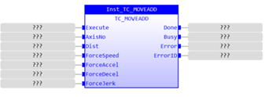
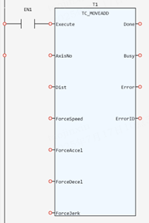

Motion Function.
Inserts an additional change of position on top of a move that is already running on the axis.
|
Execute: BOOL; |
Rising edge requests execution |
|
AxisNo: USINT; |
Axis number |
|
Dist: LREAL; |
Relative distance of the added movement |
|
ForceSpeed: LREAL; |
Value of the FORCE_SPEED |
|
ForceAccel: LREAL; |
Value of the FORCE_ACCEL |
|
ForceDecel: LREAL; |
Value of the FORCE_DECEL |
|
ForceJerk: LREAL; |
Value of the FORCE_JERK |
|
Done: BOOL; |
TRUE when function has completed normally |
|
Busy: BOOL; |
TRUE if function is running |
|
Error: BOOL; |
TRUE if a program error is detected |
|
ErrorID: UINT; |
Returned error number |
When the execute input changes from FALSE to TRUE (rising edge), the Function Block inserts an additional change of position on top of a move that is already running on the axis. The distance moved is in the same user units as the main move.
Inst_TC_MOVEADD(Execute:= (BOOL), AxisNo:= (USINT), Dist:= (LREAL), ForceSpeed:= (LREAL), ForceAccel:= (LREAL), ForceDecel:= (LREAL), ForceJerk:= (LREAL));
(BOOL):=Inst_TC_MOVEADD.Done;
(BOOL):=Inst_TC_MOVEADD.Busy;
(BOOL):=Inst_TC_MOVEADD.Error;
(UINT):=Inst_TC_MOVEADD.ErrorID;


Not available.